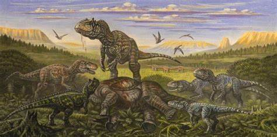

El Jurásico tardío:
Empezó hace 165 millones de años y terminó hace 145 millones de años.
Aparecen las primeras aves que evolucionaron de pequeños animales, como el Archaeopteryx.
También aumento el nivel del mar, llenando de vida el Atlántico.
 Etapas Etapas |
 Inicio Inicio |
 Jurásico Temprano Jurásico Temprano |
 Jurásico Medio |